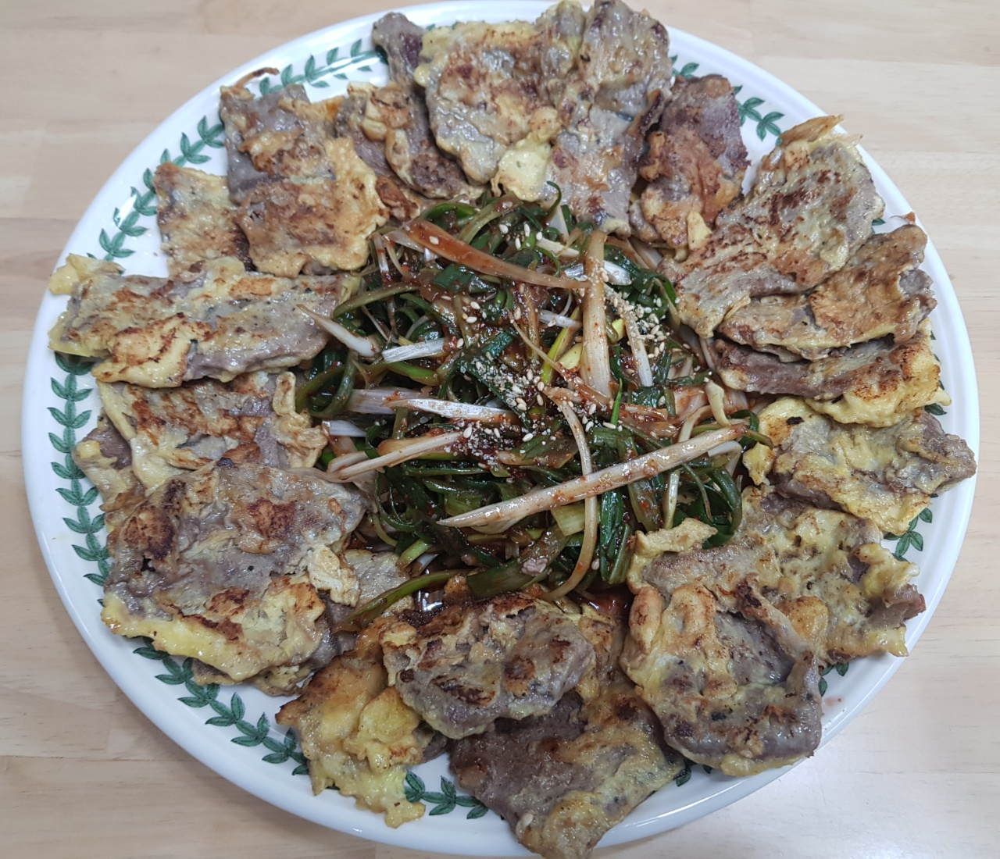

육전과 파절임

- 재료
육전용 소고기 600g, 대파 1개, 밀가루 3T, 계란 3개, 튀김가루 3T, 고추장 0.5T, 고춧가루 1T, 간장 1T
매실액 1T, 참기름 1T, 참깨 1T, 소금 톡톡, 후추 톡톡
- 조리순서
- 키친타올로 소고기 핏물을 빼고, 적당한 크기로 잘라서 소금, 후추 톡톡 뿌립니다.
파를 길게 채썰어서 찬물에 담궈둡니다.
- 소고기에 얇게 밀가루를 묻힌 후 계란물을 입힙니다.
튀김가루를 살짝 묻혀서 약불로 구워줍니다.
- 앞뒤로 뒤집어서 육전이 노릇하게 익으면 그릇에 담습니다.
- 고추장 0.5T, 고춧가루 1T, 간장 1T, 매실액 1T, 참기름 1T, 참깨 1T를 섞어 양념을 만듭니다.
파채의 물기를 제거하고 양념을 골고루 버무립니다.
- 담아둔 육전 가운데에 파절임을 얹습니다.